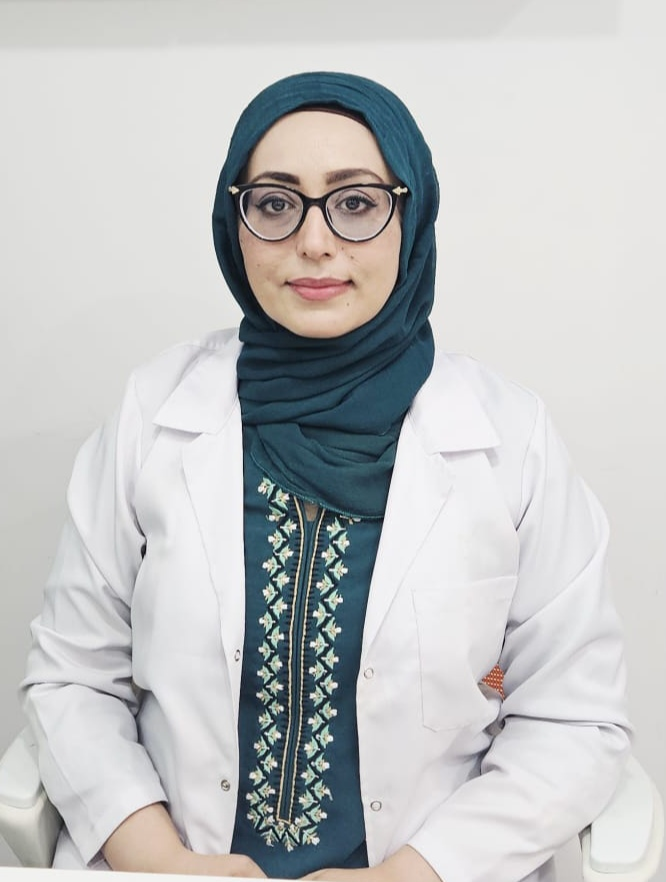

Skin Specialist & Dermatologist in Karachi
Meet Our Doctors
Zahra Health Clinic is a dermatology clinic in Karachi, based in Bahria Town. Behind every consultation is a real doctor you can meet, ask questions and trust with your skin.
Skin doctors in Karachi who explain before they treat
Choosing a skin doctor in Karachi is a big decision, especially when the treatment involves lasers or injectables. Our three doctors work as one team, so you are sent to the right person from your first visit. If you are not sure who to see, start with a consultation and we will guide you.

Dr. Hina Wazir
RMP, Cosmetologist - CEO, Zahra Health Clinic
Qualification: Fellowship in Aesthetic Medicine
Experience: 10 years
Dr. Hina leads the aesthetic side of the clinic. Patients who search for a laser and skin clinic in Karachi usually end up with her because she plans most of our laser and injectable treatments personally. She is known for keeping results natural: the aim is that people notice you look well rested, not that you have had work done.
Dr. Hina can help with: CO2 laser resurfacing for acne scars, texture and pores; laser facial and skin rejuvenation; laser hair removal for dark skin; Botox, dermal fillers, thread lifts, PRP and skin boosters.
Dr. Ahmed Khalil
Diabetes Consultant and General Physician - CEO, Zahra Health Clinic
Qualification: Masters, Queen Mary University of London
Experience: 5 years
Skin and general health are closely linked, which is why a diabetes and wellness doctor sits alongside our skin team. Dr. Ahmed looks after blood sugar, weight, thyroid and conditions that can show up on your skin, feet or hair. Patients describe him as calm and clear when explaining numbers and plans.
Dr. Ahmed can help with: Diabetes care, blood sugar and diabetic foot checks; weight management, blood pressure and cholesterol; thyroid problems; general medical consultations.
Dr. Saher Fatima
MBBS (Dip Derm) - Classified Dermatologist
Qualification: MBBS, Diploma in Dermatology
Experience: 5 years
If you are looking for a dermatologist in Bahria Town, Karachi, Dr. Saher is the doctor to see for medical skin, hair and nail problems. Patients often tell us she takes time to understand the full history before suggesting anything.
Dr. Saher can help with: Acne, pigmentation and melasma; hair fall, scalp conditions and fungal nail problems; eczema, rashes and other everyday skin concerns; mole and skin tag removal.
Which doctor should you see?
A quick guide, so you do not lose time on the wrong appointment. Not sure? Book a consultation and we will point you in the right direction.
Laser hair removal, including for dark skin: Dr. Hina Wazir
Botox, fillers, thread lift, PRP, skin boosters: Dr. Hina Wazir
Acne scars, CO2 laser resurfacing, laser facial, skin tightening: Dr. Hina Wazir
Diabetes, thyroid, weight, blood pressure, cholesterol: Dr. Ahmed Khalil
Acne, melasma, pigmentation, eczema, rashes: Dr. Saher Fatima
Hair fall, scalp and nail problems: Dr. Saher Fatima
Laser skin treatments, handled by trained doctors
Lasers are only as safe as the person using them. At our laser and skin clinic in Karachi, every laser treatment starts with a doctor assessing your skin, and your plan is written for your skin type, not copied from a menu. You can see the full list on our services page.
CO2 laser resurfacing
CO2 laser resurfacing is one of the most effective options for acne scars, rough texture and enlarged pores. Your doctor will explain healing time and aftercare before you decide.
Laser facial
A laser facial is a gentler route to brighter, smoother skin with little downtime. It suits uneven tone, dullness and early signs of ageing.
Laser hair removal for dark skin
Darker skin needs more care with laser settings and cooling to avoid burns or pigment changes. We use the Suprano Titanium double cooling system, and the doctor sets parameters after checking your skin.
What your first visit with us looks like
No pressure, no rushed sales talk. Here is what to expect when you walk into our skin clinic in Bahria Town, Karachi.
1. We listen: You tell us your concern and what you have already tried.
2. We examine: The doctor checks your skin, hair or health history properly.
3. We explain: You hear the options, expected results, downtime and cost, honestly.
4. You decide: Start when you are ready. Aftercare support is part of the plan.
Why patients trust Zahra Health Clinic
We want to earn the trust of anyone searching for the best aesthetic clinic in Karachi by being open about who treats you and what they are qualified to do.
Doctor-led care. Your treatment is planned and carried out under a qualified doctor, never handed to someone you have not met.
Honest advice. If a treatment is not right for you, or you do not need one, we will tell you.
Real patient feedback. Hundreds of patients across Karachi have shared their experience on our reviews page.
Questions patients ask before booking
The suitable acne-scar plan depends on your scar type, skin condition and treatment history. A doctor may discuss laser, microneedling, peels or a combination.
Dr. Saher Fatima provides dermatology consultations at our Bahria Town clinic. When booking, mention whether your concern involves skin, hair or nails so the team can direct your appointment.
For a hair-removal consultation, Dr. Hina can review your skin tone, hair characteristics and treatment history before discussing whether laser is suitable for you.
At our clinic, Dr. Hina focuses on aesthetic and cosmetic care, while Dr. Saher handles medical skin, hair and nail concerns. Tell the booking team your main concern if you are unsure who to see.
Consultation hours are Monday to Friday, 5:30 PM to 8:30 PM. Contact the team before visiting to confirm a slot with your preferred doctor.